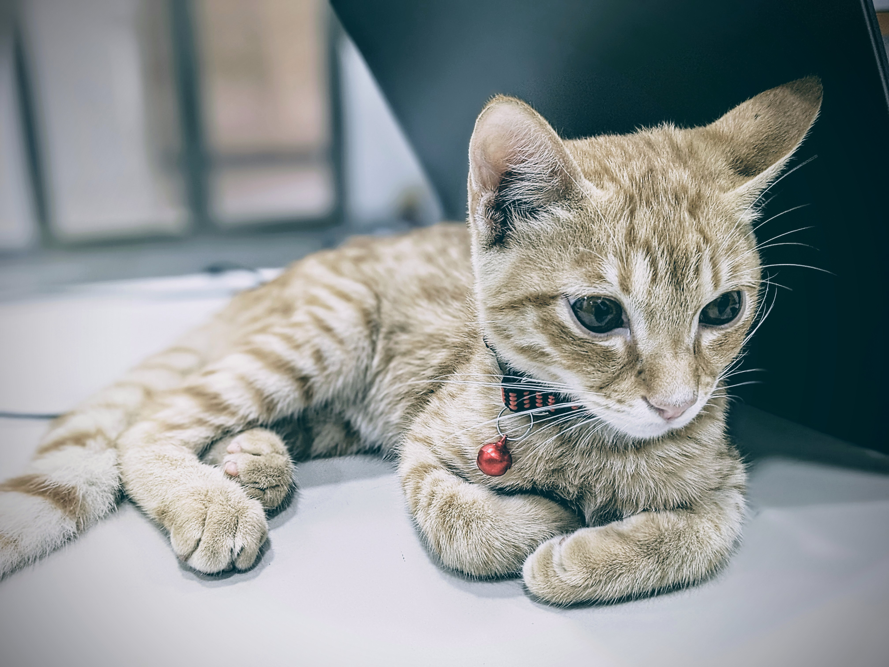

Hiieeee,I make machines think
I'm Anshhhh — an engineering student in love with intelligent systems and all things robotics .
I tinker with RL, SLAM, UWB, and embedded applications .Objectively speaking: RL is the safest bet to AGI (fight me on this).
part nihilist, part absurdist, and extremely new to my twenties , always on the lookout for the next rabbit hole to dig into
Born in the Himalayas, but mostly found in my other home Mumbai tinkering with metal and making sensors sing.
You can yap music, cinema, art, and consumer tech with me .Right now? Grinding for my we are sooo sooo baccccc moment .
Also — that cute loaf on the right is Santraaaa, my chaotic feline sidekick. Say hieee.

# Links you might care about - check out my github - check out my twt - yap with me on mail - check out my projects - find my song vault here - what am i upto? timeline |